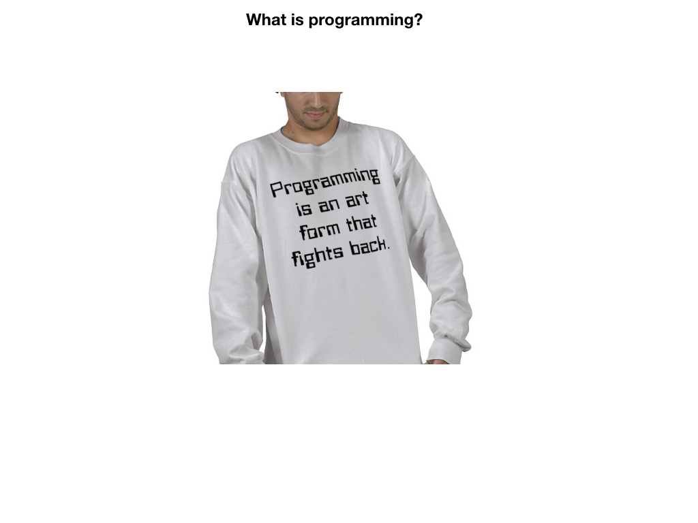
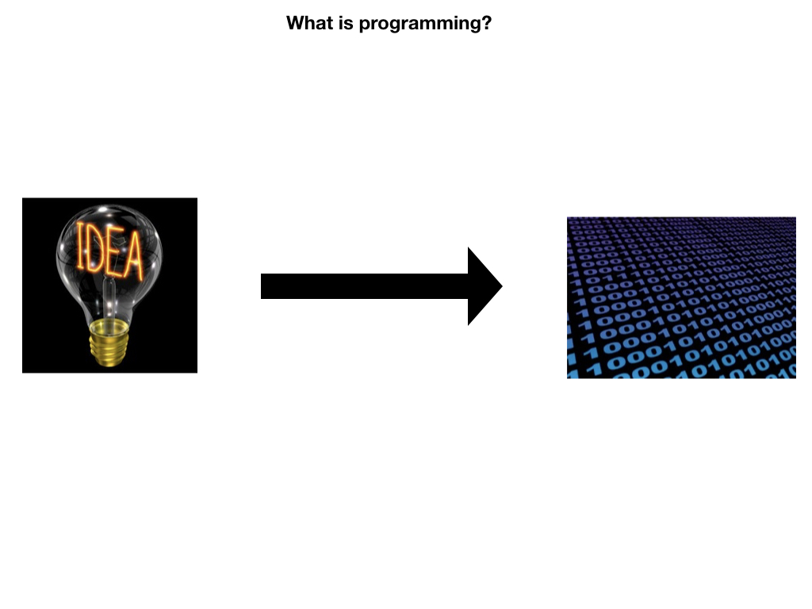

<!doctype html>
<html>
  <head>
<meta charset="utf-8">
<meta name="viewport" content="width=device-width, initial-scale=1.0, maximum-scale=1.0, user-scalable=no">

<title>Lecture 1, Part 1 - Intro</title>

<link rel="stylesheet" href="https://cdnjs.cloudflare.com/ajax/libs/reveal.js/3.6.0/css/reveal.css">
<link rel="stylesheet" href="https://cdnjs.cloudflare.com/ajax/libs/reveal.js/3.6.0/css/theme/white.min.css">
<link rel="stylesheet" href="https://maxcdn.bootstrapcdn.com/font-awesome/4.5.0/css/font-awesome.min.css">

<!-- Theme used for syntax highlighting of code -->
<link rel="stylesheet" href="https://cdnjs.cloudflare.com/ajax/libs/highlight.js/9.12.0/styles/github.min.css">
<link href="https://fonts.googleapis.com/css?family=Questrial" rel="stylesheet">

<!-- Printing and PDF exports -->
<script>
    var link = document.createElement( 'link' );
    link.rel = 'stylesheet';
    link.type = 'text/css';
    link.href = window.location.search.match( /print-pdf/gi ) ?  '/revealjs/css/print/pdf.css' : '/revealjs/css/print/paper.css';
    document.getElementsByTagName( 'head' )[0].appendChild( link );
</script>
<script src="https://cdnjs.cloudflare.com/ajax/libs/reveal.js/3.6.0/lib/js/head.min.js"></script>
<script src="https://cdnjs.cloudflare.com/ajax/libs/reveal.js/3.6.0/js/reveal.min.js"></script>


<style type="text/css">
.reveal section.present {
  text-align: left;
}
.centered {
  text-align: center;
}
.reveal {
  font-size: 30px;
  font-family: 'Questrial', sans-serif;
}
.reveal section img {
  box-shadow: none;
  border: 0px;
  display: block;
  margin-left: auto;
  margin-right: auto;
}
.reveal bigtext {
  font-size: 800%;
}

.reveal h1, .reveal h2, .reveal h3 {
  text-transform: none;
}

.reveal .titleslide h1 {
  text-align: center;
}
.reveal .titleslide h2 {
  text-align: right;
}

.vertical_center section {
  vertical-align: middle;
}

.left_abs {
  left:0%;
  text-align: left;
  float: left;
  width:50%;
  z-index:-10;
}

.left {
  left:-8.33%;
  text-align: left;
  float: left;
  width:50%;
  z-index:-10;
}

.right {
  left:31.25%;
  top: 75px;
  float: right;
  text-align: right;
  z-index:-10;
  width:50%;
}

.reveal table td {
  text-align: left;
  padding: 0.2em 0.5em 0.2em 0.5em;
  border: solid; 
}

.reveal table tbody tr:last-child th,
.reveal table tbody tr:last-child td {
  border-bottom: solid; }

.reveal .table-hl {
  background: #aaa;
}


</style>
  </head>

  <body>
    <div class="reveal">
      <div class="slides">
        <section data-markdown
           data-separator="^\n---\n"
           data-separator-vertical="^\n----\n"
           data-separator-notes="notes?:"
           >
          <script type="text/template">
<!-- .slide: class="titleslide" -->

# Intro to Scientific Computing & Data Viz
<div style="height: 6.0em;"></div>
## Jill P. Naiman
## Summer 2019

---
<!-- .slide: class="vertical_center" -->
## Basics

12-3PM M/T/W/Th/F

Jill Naiman - `jnaiman@illinois.edu` or `jill.naiman@cfa.harvard.edu`

 * Office Hours: ~3pm to ~4pm in Annenberg Dining Hall

TA: Adrianna Perez

Class webpage: https://jnaiman.github.io/csci-p-14110/ (more on this a little later)

notes: we'll go over the class webpage a little more in a few slides

---

# Housekeeping

1. Don't skip class
1. Don't be late

---

## Questions:

* Who are you?
* What are we doing?
* How are we going to do it?

---

## Questions:

* <span style="color:red">Who are you?</span>
* What are we doing?
* How are we going to do it?

---

### My background

<!---->


notes: so my PhD is in theoretical and computational astrophysics

here is a picture of a simulation I worked on

---

### My background


notes: here I've highlighted a few things - the purple is this stuff called "dark matter" which makes up about 95% of our universe

the orange stuff are concentrations of gas where galaxies form

Don't know what galaxies are?  Don't worry!  We'll go over it later in class

---

### My background


notes: if you looked deep within these centers of gas you'd find galaxies forming

Here are some pictures of "fake" galaxies that this simulation produced

BE AWARE: the basic numerical technqiues used in this large simulation, including how these images are made, are thing we will cover in this very class!

---

### My background
#### ytini.com


Naiman et al. 2017, Borkiewicz et al. 2018

notes: I've also worked for the past several years with folks at the Advanced Visualization Laboratory at the National Center for Supercomputing Applications at the University of Illinois

These are computer scientists and visual effects artists that make a lot of scientific documentaries and IMAX shows

Here is an example of how the process of taking a simulation box and making an image works

---

### My background
#### ytini.com


Naiman et al. 2017, Borkiewicz et al. 2018

notes: in this class we will discuss how to make images of our simulation and what goes into this process - how can we use colors to highlight different aspects of our simulation?  These sorts of questions we'll answer in the 2nd week of class

---

### My background
#### ytini.com


Naiman et al. 2017, Borkiewicz et al. 2018

notes: here are just some gratiuitus pretty images that the advanced visualization lab made

---

### My background
#### ytini.com


Naiman et al. 2017, Borkiewicz et al. 2018

---

## Timed activity! (~2 minutes)

Turn to your neighbor and:
1. Introduce yourself - what is your name and where are you from?
1. What is your favorite science topic?

notes: I realize this is a little hokey, but we do really need to get to know eachother!

---

## Timed activity! (~2 minutes)

Turn to your *other* neighbor and:
1. Introduce yourself - what is your name and where are you from?
1. What are you excited to learn about in this class?

notes: I realize this is a little hokey, but we do really need to get to know eachother!

---

## Questions:

* Who are you?
* What are we doing?
* How are we going to do it?

---

## Questions:

* ~~Who are you?~~
* <span style="color:red">What are we doing?</span>
* How are we going to do it?

---

## What are we doing?

Essentially:

<iframe width="560" height="315" src="https://www.youtube.com/embed/o2lRpiediP8?start=340" frameborder="0" allow="accelerometer; autoplay; encrypted-media; gyroscope; picture-in-picture" allowfullscreen></iframe>

The data for this movie snippet was simulated using similar numerical methods to what are going to build in this class.

The movie was created in AVL using visualization methods we will make use of in week 2 (our's won't be as polished, but this viz was built by a team of experts!).

notes: essentially, we'll be doing this, more or less

The data for this movie is generated from something called an SPH simulation - SPH stands for smooth particle hydordynamics.  This solves *both* gravitational *and* hydrodynamical (i.e. how gas interacts) forces - we'll just be solving for gravitational forces in this class, specifically this first week.

The data outputs from this simulation are scientific in nature - so things like particle temperature, velocity, location, but translating that into colors and shapes is the job of the visualization expert - we'll start thinking about methods to do just that in the 2nd week of this class.

---

## What are we doing?

<div>
<div style="float:left;width:48%;margin-right:14px;" class="sketchfab-embed-wrapper"><iframe width="400" height="300" src="https://sketchfab.com/models/ece18031ea59414f8b4a506a7d45a62e/embed" frameborder="0" allow="autoplay; fullscreen; vr" mozallowfullscreen="true" webkitallowfullscreen="true"></iframe>

<p style="font-size: 13px; font-weight: normal; margin: 5px; color: #4A4A4A;">
    <a href="https://sketchfab.com/3d-models/my-solar-system-ece18031ea59414f8b4a506a7d45a62e?utm_medium=embed&utm_source=website&utm_campaign=share-popup" target="_blank" style="font-weight: bold; color: #1CAAD9;">My Solar System</a>
    by <a href="https://sketchfab.com/jnaiman?utm_medium=embed&utm_source=website&utm_campaign=share-popup" target="_blank" style="font-weight: bold; color: #1CAAD9;">jnaiman</a>
    on <a href="https://sketchfab.com?utm_medium=embed&utm_source=website&utm_campaign=share-popup" target="_blank" style="font-weight: bold; color: #1CAAD9;">Sketchfab</a>
</p>
</div>

<div style="float:left;width:48%;" class="sketchfab-embed-wrapper"><iframe width="400" height="300" src="https://sketchfab.com/models/d9edf3cc17d94039b4272dd2563e41e9/embed" frameborder="0" allow="autoplay; fullscreen; vr" mozallowfullscreen="true" webkitallowfullscreen="true"></iframe>

<p style="font-size: 13px; font-weight: normal; margin: 5px; color: #4A4A4A;">
    <a href="https://sketchfab.com/3d-models/galaxy-merger-model-d9edf3cc17d94039b4272dd2563e41e9?utm_medium=embed&utm_source=website&utm_campaign=share-popup" target="_blank" style="font-weight: bold; color: #1CAAD9;">Galaxy Merger Model</a>
    by <a href="https://sketchfab.com/jnaiman?utm_medium=embed&utm_source=website&utm_campaign=share-popup" target="_blank" style="font-weight: bold; color: #1CAAD9;">jnaiman</a>
    on <a href="https://sketchfab.com?utm_medium=embed&utm_source=website&utm_campaign=share-popup" target="_blank" style="font-weight: bold; color: #1CAAD9;">Sketchfab</a>
</p>
</div>

</div>

<div style=”clear:both;height:1em;”>

<p>

<br/><br/>

We'll start off simply but there are ways to extend the complexity of our [planetary models](https://sketchfab.com/3d-models/solar-sistem-00c2fd1b0cf74846b540c3c4b95e7f6b).

</p>

</div>

notes: we'll build to things like this with planetary systems and/or galactic systems that you calculate the motions and shapes for this week

Here I'm just showing similar examples with a (hopefully) familiar planetary system and a galaxy simulation I worked with a little while ago


---

## What are we doing?

To do this, we need to know the following things:

---

## What are we doing?

To do this, we need to know the following things:
1. Astronomy: 
 * we'll learn a bit about planets, stars, and galaxies
 
notes: From the survey most folks don't have an astronomy background so we'll spend a bit of time learning about that

---

## What are we doing?

To do this, we need to know the following things:
1. Astronomy: 
 * we'll learn a bit about planets, stars, and galaxies
1. Physics: 
 * circular motion, gravity, and how objects move in orbits under the influence of gravity
 * we'll look at the analytical solution for 2-gravitating-body motion
 
notes:

Folks have a variety of physics, math - this is great!
 * we'll go over some aspects of circular motion in general, and 2-body orbits - this will be review for most, but there will be plenty of time to get caught up on homework and you can always ask questions!
 * I'll provide a writeup of the full, calculus-based solutions for kepler's laws of motions - since calculus is not a requirement for this class, we'll just cover some ways to apply kepler's laws to problems. 
   * feel free to re-check up on the calculus solution once you've taken some calculus classes!

---

## What are we doing?

To do this, we need to know the following things:
1. Astronomy: 
 * we'll learn a bit about planets, stars, and galaxies
1. Physics: 
 * circular motion, gravity, and how objects move in orbits under the influence of gravity
 * we'll look at the analytical solution for 2-gravitating-body motion
1. Programming: 
 * the basics - what is programming?  Flow control, functions, calculations and beyond!
 * how to use code to solve for the motion of more than 2 objects in a gravitational system
 * how to use code to translate our scientific simulations into neat visualizations (images, movies, and on the web)
 
notes:

Folks have a variety of coding backgrounds as well - this is also great!
 * we'll go over some basics of coding practices today and tomorrow as well - again, this will be review for some and totally new for others and that is totally fine!

---

## Questions:

* Who are you?
* What are we doing?
* How are we going to do it?

---

## Questions:

* ~~Who are you?~~
* ~~What are we doing?~~
* <span style="color:red">How are we going to do it?</span>

notes: ok, we've gone over the who and the what, now lets get to the "how" - what resources are we going to make use of for this project?

---

## Resources:

1. Class webpage: https://jnaiman.github.io/csci-p-14110/ 
   * lecture slides
   * coding "notebooks"
   * external resources

notes: go through website!!

highlights:
* references like python & matplotlib
* cheat sheets ofr markdown and jupyter
* slack channel
* lessons -> go to lesson 1
  * lesson plans will give overviews of what we are doing that day at the top, then any resources (installation notes today), and then materials like lecture slides & notebooks will be linked at the bottom

---

## Resources:

1. Class webpage: https://jnaiman.github.io/csci-p-14110/ 
   * lecture slides
   * coding "notebooks"
   * external resources
1. Canvas Page: https://canvas.harvard.edu/courses/57025
   * This is where quizzes and homeworks will be assigned and turned in.

notes: Homework & quizzes will be turned in on the canvas webpage

---

## Resources:

1. Class webpage: https://jnaiman.github.io/csci-p-14110/ 
   * lecture slides
   * coding "notebooks"
   * external resources
1. Canvas Page: https://canvas.harvard.edu/courses/57025
   * This is where quizzes and homeworks will be assigned and turned in.
1. Anaconda: [https://www.anaconda.com/distribution/#download-section](https://www.anaconda.com/distribution/#download-section)
   * For now - just download this file, we'll talk about how to use it later in class
   * __Make sure you download Python version 3 not 2!!__
   
notes: We will be using the Anaconda package manager to install the programming language Python as well as any additional libraries we might need, as well as to launch jupyter pages with

If all those words seem confusing to you, don't worry!  We'll go over them more later in class

Right now - please go to the webpage listed and download Anaconda for Python 3 (should say 3.7 or something like this)

We'll go over how to install later in class, but lets all get it downloaded first since it may take a while


---

## Resources:

1. Class webpage: https://jnaiman.github.io/csci-p-14110/ 
   * lecture slides
   * coding "notebooks"
   * external resources
1. Canvas Page: https://canvas.harvard.edu/courses/57025
   * This is where quizzes and homeworks will be assigned and turned in.
1. Anaconda: [https://www.anaconda.com/distribution/#download-section](https://www.anaconda.com/distribution/#download-section)
   * For now - just download this file, we'll talk about how to use it later in class
   * __Make sure you download Python version 3 not 2!!__
1. Slack channel: https://cscip14110sum-arr8217.slack.com
   * Use as professional adults

notes: We'll alos have a slack channel - use this as adults, so no bad words, no put-downs, etc

---

## Slack 

 * Use the `@` sign appropriately: `@[person]`, `@here`, `@channel`
 * Web client, standalone client and mobile devices can access this team.
 * At the end of the course, the team will be discontinued.
 * Please think carefully before direct messaging if you could ask in a public
   forum instead.
 * Conduct will be held to same standards as any educational venue.

notes:
Please use slack as much as you need!  You can use it to share items and
articles with the class, to collaborate, to discuss and ask questions and get
feedback.  However, please do behave in a professional fashion.

---

## Class outline: Syllabus

### Computational Physics Week

 * Day 1: Introduction, syllabus, examples, and some basics about Astro, Physics, Programming
 * Day 2: Gravity, calculating 2-body orbits, more programming
 * Day 3: Numerical and analytical solutions of orbits for 2-body problem
 * Day 4: Multi-body problem in 2D/3D
 * Day 5: Multi-body problem in 3D & Other solvers

---

## Class outline: Syllabus

### Computational Physics Week

 * Day 1: Introduction, syllabus, examples, and some basics about Astro, Physics, Programming
 * Day 2: Gravity, calculating 2-body orbits, more programming
 * Day 3: Numerical and analytical solutions of orbits for 2-body problem
 * Day 4: Multi-body problem in 2D/3D
 * Day 5: Multi-body problem in 3D & Other solvers
 
### Data Visualization Week

 * Day 1: Intro to data viz, simple 2D movies, interactivity
 * Day 2: Info viz and more on interactivity in 2D
 * Day 3: Plotting in 3D in Python interactively
 * Day 4: Graphic concepts, web-viz, 3D geometries
 * Day 5: 3D movies online, finalization of projects, viz party!

notes: this schedule is a little "loose" - i.e. we have some time to go 
into more/less details on things that folks are not into/super interested in

---

## Class outline: Syllabus

### Day structure

First "half":
 * Lecture style covering concepts
 * Physics/Math/Astro practice problems
 * HW discussions
 
Second "half":
 * Hands-on programming
 * Group programming

notes:
Also, we'll in general have morning sessions devoted to physics/math/astro/viz concepts, and this will be more "lecture style"

In the afternoon's we'll do more hands-on coding and group work

See that i've got "half" in quotes - this is because somedays (like today) will be more lecture heavy, while others will be more programming heavy - this will espeically be true as we move later in the week and you're all working on projects

---

## Teaching philosophy

 * Non-competative, group learning environment
 * There are no "lone wolfs" in science - [Path to Newton](https://drive.google.com/file/d/1-WSmMd7TJsWeNAZB_wZYeemlLnkRFuHa/view)
   * More info here: https://predictionx.org/path_to_newton
 * Inquiry based approach to learning - basically, we are actually going to do some computational astrophysics!

---

# The Things I Want You To Take Away
1. Coding is not magic, and neither is astrophysics
1. Numerical solutions are only so precise, but we can measure their inaccuracy
1. There are a variety of methods and codes to use for numerical science 
1. There are a variety of systems, tools, and ecosystems available for visualizing data
1. How not to lie with data viz (and how to detect when someone is lying to you!)
1. How to share scientific results online with data viz tools


---

## Assignments: **Posted on Canvas**

 * Daily, assigned in class, collected following class 
 * These will consist of prose, math, reading, and coding assignments
 * There will also be a few online videos with quizzes (on the Canvas webpage)

---

## Assignments: **Posted on Canvas**

 * Daily, assigned in class, collected following class 
 * These will consist of prose, math, reading, and coding assignments
 * There will also be a few online videos with quizzes (on the Canvas webpage)
 
Some assignments or parts of assignments are meant to be done on your own, others can be done collaboratively - but make sure you turn in work that is in your own words!

---

## Plagiarism

 * Plagiarism is about copying ideas.
 * Cite all code you utilize from elsewhere.

notes:
When programming, I expect that you will do things like search on the internet
to find help with a given problem.  This is fine.

But, you *must* cite where any code snippets came from.  And you *must* note if
you are working with other people in the group!

Using snippets of code is fine -- but you may not copy large-scale amounts of
code from other work (for example, other visualizations) and pass it off as
your own.  Always cite, and be reasonable in what you utilize.

---

## Our tools

 * Python
 * Jupyter and Jupyter notebooks (maybe on a Jupyterhub)
 * The occasional usage of a shell such as bash
 * Slack

notes:
You will be expected to write code in Python.  Slack will be used for communications.

We'll also cover a bit of javascript, html for online viz, but that will mostly be "for your interest" and not something you need to dig deep into.


---

## Github (not required, but just FYI)

 * Course repo is at [https://github.com/jnaiman/csci-p-14110](https://jnaiman.github.io/csci-p-14110/)
 * Automatically built to [https://jnaiman.github.io/csci-p-14110/](https://jnaiman.github.io/csci-p-14110/)

notes:
All the materials for this course will be stored in github, and are available
under a very permissive license.  It is largely written in markdown and
automatically compiled to web pages when changes are made.

You are invited to clone the repo, fork and submit changes (typos, etc!), and
to use any information in it in the future.

---

# Speaking of that course webpage...

[https://jnaiman.github.io/csci-p-14110/](https://jnaiman.github.io/csci-p-14110/)

notes: *go to webpage*

1. Main page - populated with overall references & lessons for each day
1. Syllabus
1. Lesson 1 page: each day will be different, this day has some installation notes & videos, extra resources for the topics we'll be covering today and tomorrow
1. at the end of each page there is the "Materials" section - this is where you can see the lecture slides and any notebooks we create during class

---

## Questions:

* Who are you?
* What are we doing?
* How are we going to do it?

---

## Questions:

* ~~Who are you?~~
* ~~What are we doing?~~
* ~~How are we going to do it?~~

notes: so now we've covered all our who what hows! Lets get into the first bit of knowledge that we need - a bit of background about astronomy

A lot of this might be review for folks, but its good that we all have the same basic knowledge about exactly where we are in space and time.

---

## Astronomy

The size of stuff:

<iframe width="800" height="450" src="https://www.youtube.com/embed/JeMXuE5KUYQ?rel=0" frameborder="0" allow="accelerometer; autoplay; encrypted-media; gyroscope; picture-in-picture" allowfullscreen></iframe>

(Actually not largest star - we know of several more larger!)

notes: so this just gives you a sort of size scale of the things we'll be talking about - we'll be dealing with planets and planetary systems (ours is called the solar system!)

---

## Astronomy 

A reminder of where we are:


notes: So, here is where we are.  This Earth, Boston approximately *there*

---

## Astronomy 

A reminder of where we are:


notes: the Earth is part of the solar system with several planets/planetismals, and other things orbiting our own neighborhood star, the sun

In this image, the planets are to scale, but the distances are not

---

## Astronomy 

A reminder of where we are:


notes: in this image, the distances are now to scale, but the size of planets are not - if the planets were on the correct size scale then we wouldn't be able to see them because they would be much much smaller than the Sun

notice how small the orbits of the inner planets like earth and mars are compared to the outer planets

---

## Astronomy 

A reminder of where we are:


notes: if we zoom out even further, we see that our solar system that is orbiting our local star, the Sun is just one of several stars nearby, here just focusing on the brightest ones

---

## Astronomy 

A reminder of where we are:


notes: if we zoom out even further we find that these local group of stars is actually collected in an object called a "galaxy", and our galaxy is called the "Milky Way"

The milky Way has about 250 billion stars in it.

This is of course just a guess at what the milky way looks like - in reality we are sitting about 1/2 way out in the disk and so we can't see what the whole thing looks like we can only see the disk "edge on" which is what the bright strip of sky looks like if you go out to an area without many artificial lights at night 

---

## Astronomy 

A reminder of where we are:


notes: this is what it looks like if you've never had an opportunity to see it before in a very dark area

---

## Astronomy 

A reminder of where we are:


notes: if we zoom out even further we find that that our milky way is surrounded by a lot of little, relatively star-less galaxies called "dwarf galaxies" and it has a neighbor called the Andromeda galaxy

Our Milky Way will actually collide with the Andromeda galaxy in about 4.5 billion years, but fun fact - nearly none of the individual stars will not collide with eachother!

---

## Astronomy 

A reminder of where we are:


notes: and if we keep zooming out we see that there are actually trillions of galaxies in the Universe!  This is an actual image taken with the Hubble space telelscope of a very very small little bit of the sky and all of these points of light are actually galaxies

---

## Astronomy 

A bit more about planets:


notes: so, lets step back in in scale and look back again at planets in a bit more detail

It turns out as far as well can tell, a good number of stars besides our own contain planetary systems that orbit them

There are 2 basic types of planets - terresstrial that are rocky and earth-like, and Jovian that are like our Jupiter that are mostly gas planets

---

## Astronomy 

A bit more about planets:


notes: notice that this is actually an older figure and there are actually many more planets that we've found with the Kepler telescope than is plotted here

On the y-axis here we have plotted the size in earth-radii of these planets found in a *log* scale - so at the top we are plotting objects that have sizes about the size of jupiter

On the bottom we have plotted the orbital time in days, again in a log scale.  So the earth would be right about *here*

You can see that there is a gab in the plot there and you might wonder if this is because Earths are rare.  But in fact its likely a function of how we measure these things - with Kepler we are looking for "dips" in the brightness of stars due to planets...

---

## Astronomy 

A bit more about planets:

<iframe width="800" height="450" src="https://www.youtube.com/embed/3Wxd3fDFmO4?start=55" frameborder="0" allow="accelerometer; autoplay; encrypted-media; gyroscope; picture-in-picture" allowfullscreen></iframe>

notes: ...so this means that bigger planets closer to their stars will be seen more easily

---

## Astronomy 

A bit more about planets:

<iframe width="800" height="450" src="https://www.youtube.com/embed/Td_YeAdygJE?rel=0" frameborder="0" allow="accelerometer; autoplay; encrypted-media; gyroscope; picture-in-picture" allowfullscreen></iframe>

more info: http://astro.uchicago.edu/~fabrycky/kepler/

notes: you can see this more with this nice visualization of planetary systems here - it seems like there are a lot of big, close in things, but again, this is likely because of the way we are measuring things

---

## Astronomy 

How can we test this hypothesis that we are "missing" Earth-like planets with our telescope?
 * Is the Solar System unusual?  Unstable?
 * How easy is it to "make" other habitable planetary systems?
 
Simulate planetary systems on the computer!
 
notes: to make educated guesses about what kinds of planetary systems might be plausable we can model them on computers 

We can see for how long, how many millions and billions of years, a particular system might live by seeing if any planets fall into the sun or are thrown out of a planetary system of a given configuration

We'll in fact do this in this class!

notice - lets talk about galaxies when we get to them

---

## First glance at programming

To simulate anything with a computer, we need to understand some basics of programming - so let's got to it!

notes: now we will start with some basics of how to install/open things and learn some basics of data structures

This will be review for folks who have done some programming before, and it will seem strange and new.  Both things are ok!  Everybody can learn something new here.

---

# To Python!

notes: *now open up python part 1*


---

## A bit more about Flow Control...

notes: we've covered some basics, now lets start thinking about some more fancy things we can do with programming...

Again, this might be new to some folks and there is nothing wrong with that!  While this may seem weird at the begnning it will get easier to understand as we practice more!

We're going to tackle some stuff we'll put under the umbrella of "flow control" - i.e. how to make our code more efficient and easier to read/write

---


---


---



---



---


---


---


---


---


---


---


---


---


---


---


---


---


---


---


---


---


---


---


---


---


---


---


---


---


---


---


notes: ok, lets go back now to python and put this into practice

*go to part 2*


          </script>
        </section>
      </div>
    </div>
<script>
    // More info about config & dependencies:
    // - https://github.com/hakimel/reveal.js#configuration
    // - https://github.com/hakimel/reveal.js#dependencies
    Reveal.initialize({
        dependencies: [
            { src: 'https://cdnjs.cloudflare.com/ajax/libs/reveal.js/3.6.0/plugin/markdown/marked.js' },
            { src: 'https://cdnjs.cloudflare.com/ajax/libs/reveal.js/3.6.0/plugin/markdown/markdown.min.js' },
            { src: 'https://cdnjs.cloudflare.com/ajax/libs/reveal.js/3.6.0/plugin/notes/notes.min.js', async: true },
            { src: 'https://cdnjs.cloudflare.com/ajax/libs/reveal.js/3.6.0/plugin/highlight/highlight.min.js', async: true, callback: function() { hljs.initHighlightingOnLoad(); } },
            { src: '/reveal.js-plugins/chalkboard/chalkboard.js' },
            { src: 'https://cdnjs.cloudflare.com/ajax/libs/reveal.js/3.6.0/plugin/math/math.min.js', async: true }
        ],
		keyboard: {
			67: function() { RevealChalkboard.toggleNotesCanvas() },	// toggle notes canvas when 'c' is pressed
			66: function() { RevealChalkboard.toggleChalkboard() },	// toggle chalkboard when 'b' is pressed
			46: function() { RevealChalkboard.clear() },	// clear chalkboard when 'DEL' is pressed
			 8: function() { RevealChalkboard.reset() },	// reset chalkboard data on current slide when 'BACKSPACE' is pressed
			68: function() { RevealChalkboard.download() },	// downlad recorded chalkboard drawing when 'd' is pressed
		},
        center: false,
        transition: 'none',
        backgroundTransition: 'none',
        showNotes: true,
        progress: false,
	slideNumber: true,

    });
</script>
  </body>
</html>

